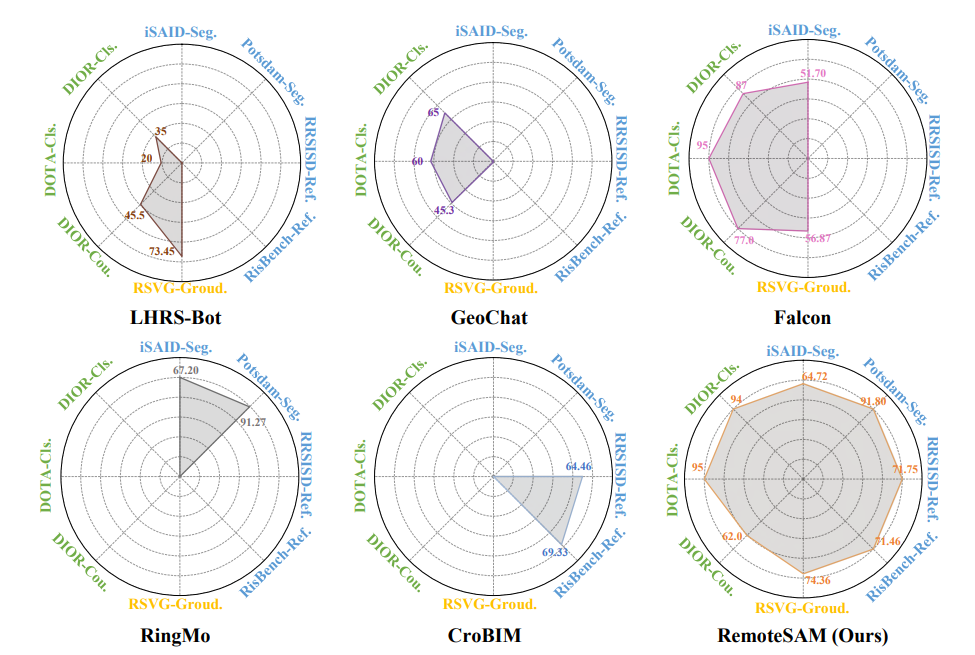
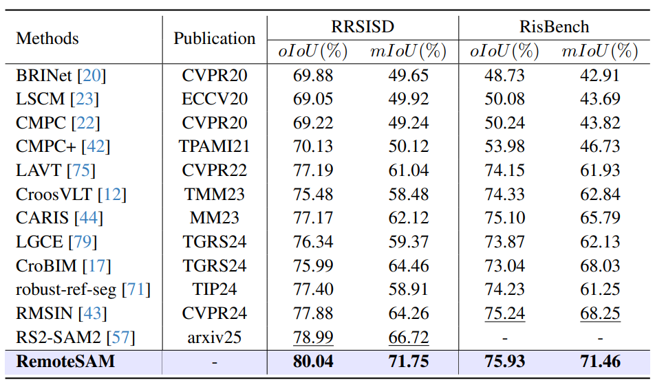
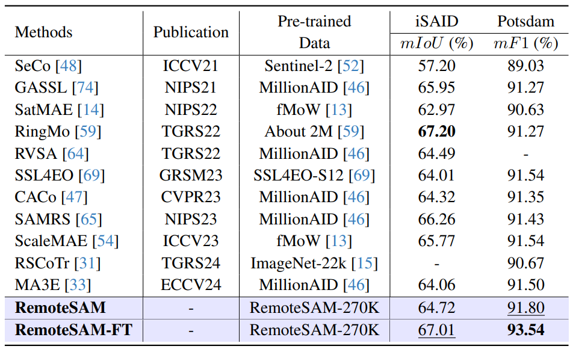
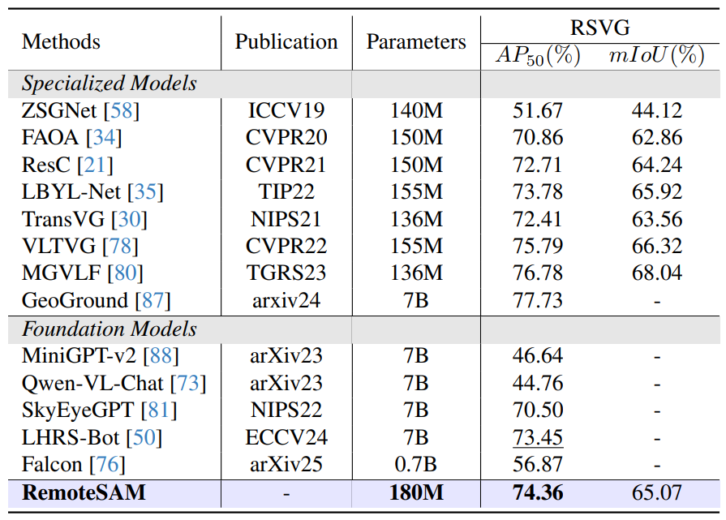
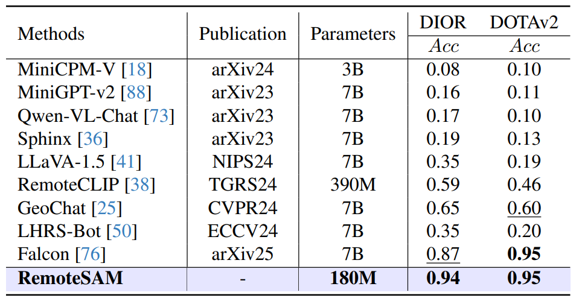
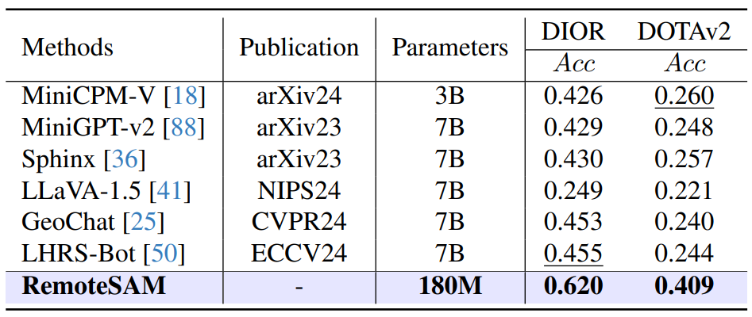

- Segmentation-centered foundation model. RemoteSAM is a robust and flexible visual foundation model for Earth Observation built around a referring segmentation-based task unification paradigm.
- Large-scale referring dataset. RemoteSAM-270K is constructed with an automatic data curation pipeline and provides 270K image-text-mask triplets with rich semantic coverage.
- Hierarchical semantic vocabulary. RSVocab-1K is introduced to evaluate semantic coverage and measure dataset adaptability to real-world remote sensing applications.
- Holistic evaluation. RemoteSAM delivers strong performance across multiple visual-centric tasks with substantially fewer parameters.

Overall comparison across pixel-level, region-level, and image-level benchmarks.

Referring expression segmentation on RRSISD and RisBench.

Semantic segmentation on iSAID and Potsdam.

Visual grounding on RSVG with a compact 180M-parameter model.

Multi-label classification on DIOR and DOTAv2.

Object counting on DIOR and DOTAv2.